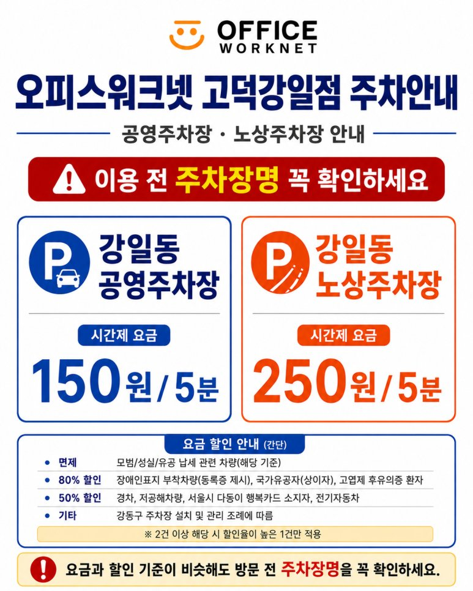
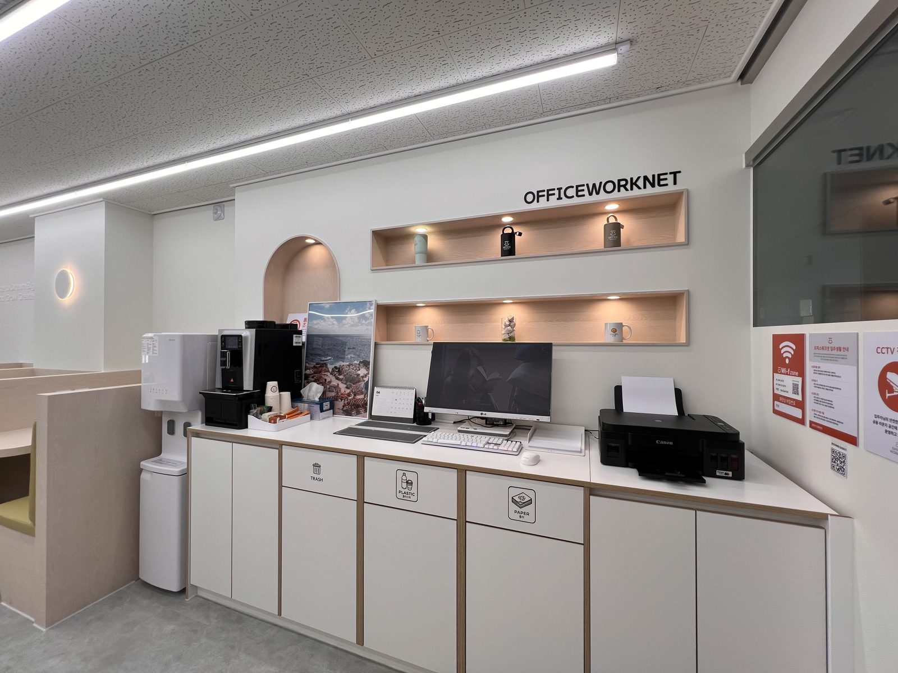

시설
| 시설 | 안내 |
|---|---|
| 상주 사무실 12실 | 1인실·2인실. 책상·의자·수납장 기본 제공 |
| 라운지 고정석 9석 | 라운지석·창가석·프리미엄석 |
| 미팅룸 | 유리벽 미팅룸 1실. 예약 방식은 톡톡으로 안내 |
| 탕비실 | 커피머신·정수기·복합기(프린터) |
| 우편물 보관함 | 도착 시 알림 |
| 출입 | 24시간 무인 출입 |
| 주차 | 건물 내 주차 없음. 건물 주변 공영주차장 2곳 유료 이용 — 강일동 공영주차장 5분당 150원, 강일동 노상주차장 5분당 250원 |
주차 안내
건물 안에는 주차 공간이 없어 차로 오시는 분은 건물 주변 공영주차장 2곳을 유료로 이용하시면 됩니다. 두 곳 이름이 비슷하니 이용 전 주차장명을 꼭 확인하세요.
| 주차장 | 시간제 요금 | 비고 |
|---|---|---|
| 강일동 공영주차장 | 150원 / 5분 | 경차·전기차·저공해차량 50% 할인 등 강동구 조례 기준 |
| 강일동 노상주차장 | 250원 / 5분 | 할인 기준 동일, 2건 이상 해당 시 높은 1건만 적용 |

사진


